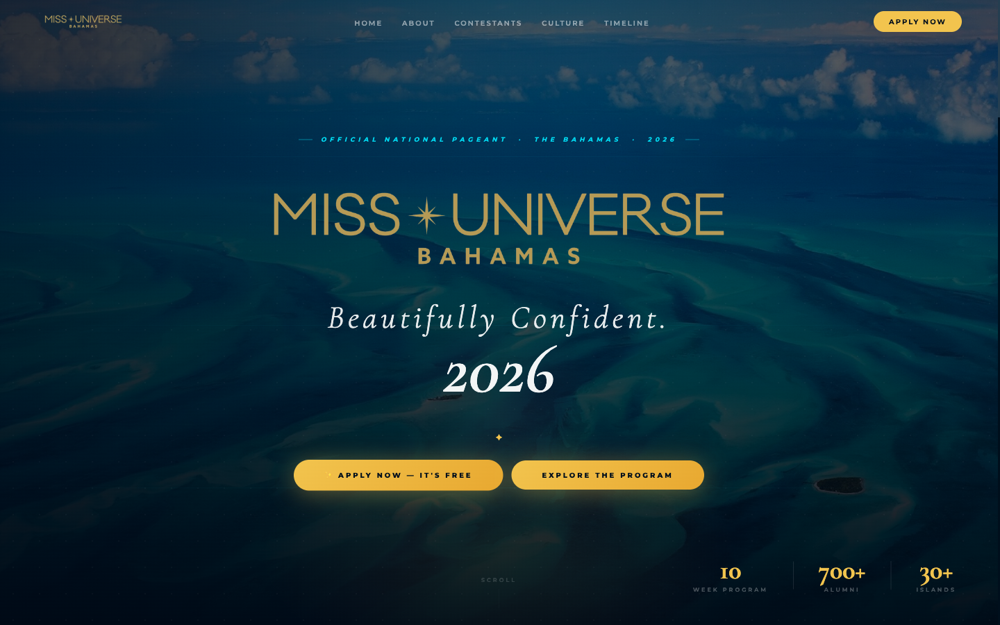
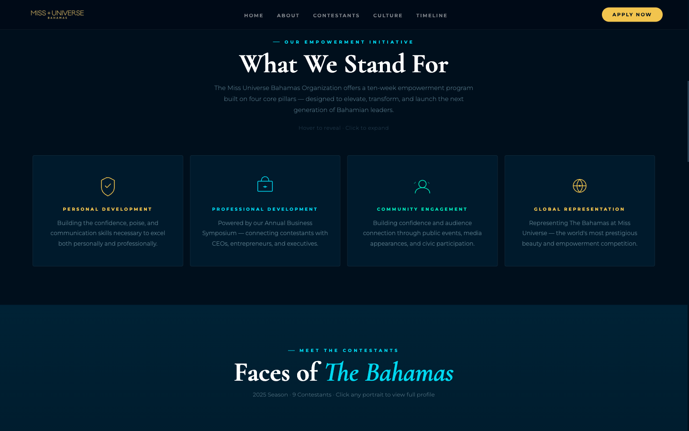
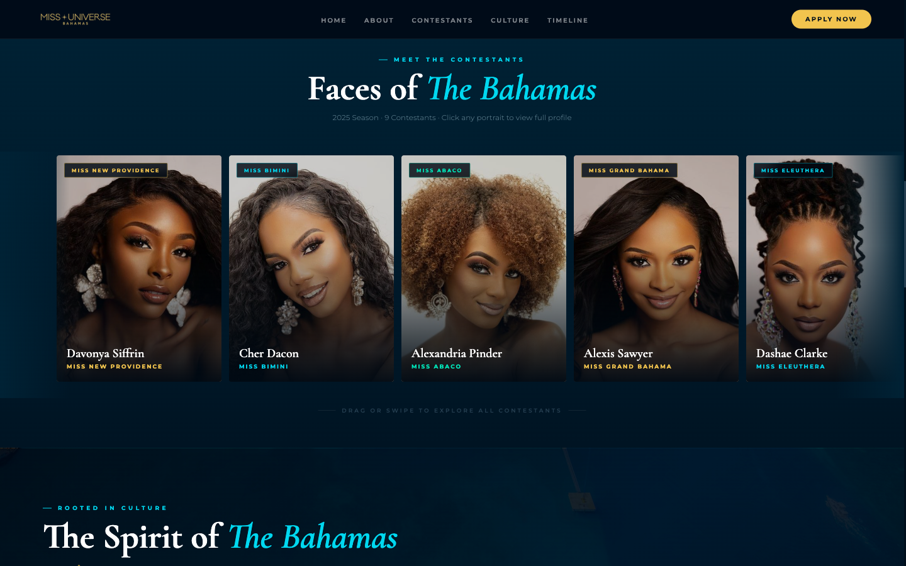
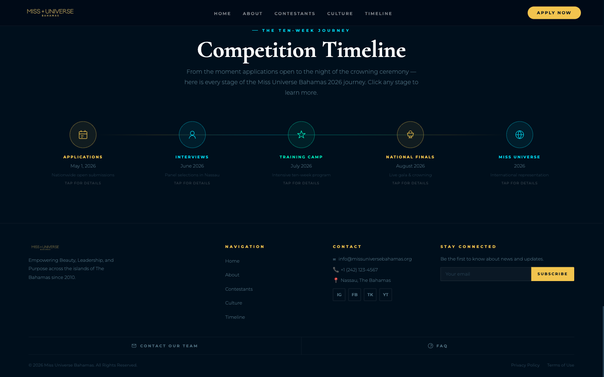
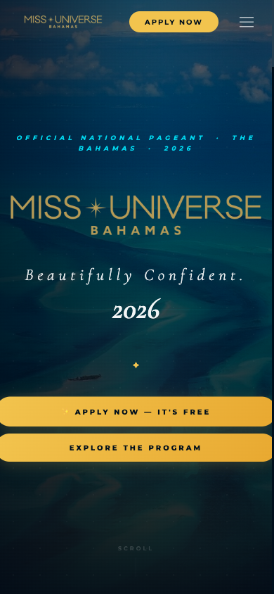
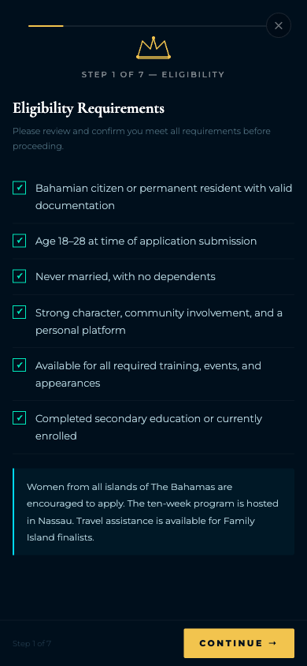
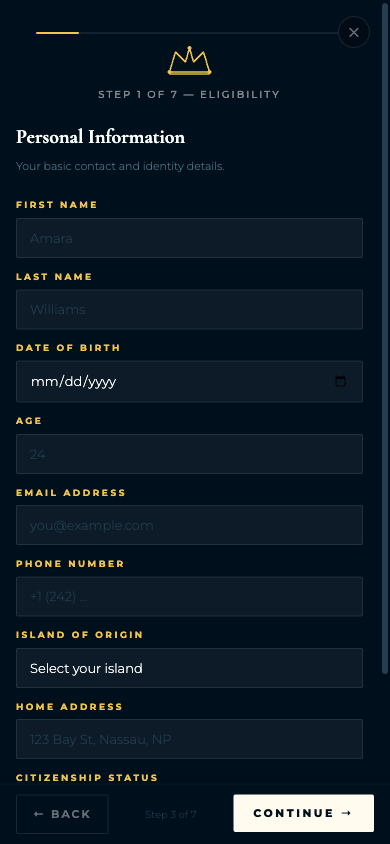

The site looks like it's capturing leads. It isn't.
The design is strong. The application form connects to a live database. But every other system meant to capture interest — the email signup, the contact form, the social media links — is completely broken. They look finished. They send nothing.
Every person who has subscribed to the mailing list has not been added to any list. Every contact inquiry has been discarded. All four social media icons link to a dead anchor. There is no analytics. When anyone shares the site link on social media, the preview is blank.
The fixes are not structural — most are one-line changes. But they need to happen before another applicant cycle begins.
The visual design is genuinely strong. The gold-and-navy palette looks professional. The fonts are well-chosen. The hero section commands attention. The 7-step application form is architecturally sound and connected to a real Supabase database. The Privacy Policy and Terms of Use pages exist and load correctly. The page loads fast — under 250ms to first paint.
There is also a JavaScript error on every page load that freezes the application form's step counter, and the site has no Open Graph tags, meaning every shared link shows a blank preview on social media.
Four lanes evaluated. Each grade reflects how well that area serves the primary goal: more applicants and sign-ups.
For the designer: The visual work is strong and doesn't need to be revisited. The urgent work is connecting the forms that look finished to real backends. Items 1–7 in the action plan are all one-line or minimal changes and can be completed in a single session.
Captured July 1, 2026 at 1440px — standard laptop or desktop width.




Tested at 390px — iPhone 14 Pro width. Most prospective applicants will arrive on a phone.

The "Apply Now" button was clicked and each step of the application was navigated. One bug was found on step 3 that affects every applicant.


The visual design is doing real work. There are two things worth addressing — one is a design fix, one is a judgment call.
The gold-and-navy palette reads as prestigious without being stiff. The font pairing — Cormorant Garamond for headlines and Montserrat for body — is well-chosen. The hero section commands attention. The stat strip (10 Week Program · 700+ Alumni · 30+ Islands) is smart — specific numbers carry more weight than general claims. The contestant portraits are clean and well-framed.
The "What We Stand For" section includes the instruction "Hover to reveal · Click to expand" written as a paragraph. When users need to be told how to interact with an element, the visual design isn't communicating it on its own. This is Nielsen heuristic #6 — Recognition over Recall. The fix is visual: a visible bottom border, a small arrow icon, or a partial-text reveal on the pillar cards that signals interactivity without words.
Secondary issue: "Hover to reveal" is a mouse-only affordance. On a phone there is no hover state. Touch visitors read this instruction and have no way to follow it.
"Beautifully Confident." is on-brand. But a first-time visitor arriving from a social share — someone with no prior knowledge of MUB — doesn't immediately know what they're looking at. The small sub-label above the logo ("Official National Pageant · The Bahamas · 2026") carries this orientation, but it's small and reads as metadata rather than an invitation. This is a judgment call, not a rule violation — ambiguous hero headlines can work when the audience already knows the brand. It becomes a liability when cold referral traffic is a primary acquisition channel.
The application form is well-structured. Three technical problems affect every visitor — two of them are single-line fixes.
No matter which step of the 7-step form a visitor is on, the header permanently reads "STEP 1 OF 7 — ELIGIBILITY." The footer correctly displays the current step. The header progress bar never moves.
Root cause: Two lines of code that should be inside the hudGo(n) function were placed outside it at the top level of the script. At the top level, the variable n doesn't exist, throwing a ReferenceError that the browser logs on every page load.
This is a 15-minute fix with no design changes required.
The viewport meta tag contains maximum-scale=1.0, which prevents mobile users from zooming in. This violates WCAG 1.4.4 (Resize Text, Level AA), which requires text to be resizable to 200% without loss of content or functionality. The fix is deleting four words.
Step 2 ("How to Apply") is a purely informational screen. It lists the overall process with no form fields. An applicant reads "Step 2 of 7" and thinks they're making progress, but they haven't typed a single character. This makes the form feel longer than it is. Recommendation: move the "How to Apply" content to a screen shown before the form opens, or merge it with the Step 1 eligibility overview. The remaining five steps are all genuine data-entry steps.
When a required field is missed and "Continue" is tapped, the form highlights the empty field with a red border. On mobile, if the invalid field is above the current scroll position, the red border is off-screen and the user sees nothing happen. One line of code fixes this:
Most of the writing is effective. Two things need attention before the next applicant cycle.
Appending "It's Free" directly to the call-to-action button is smart. Before a visitor can wonder whether there's an entry fee, the button already answers the question. The Competition Timeline section is also well-executed — it gives prospective applicants specific dates and shows exactly what a 10-week commitment looks like. Specificity builds trust.
The footer lists +1 (242) 123-4567. This is a sequential placeholder — digits 1 through 7 in order. It is not a working number. A journalist, parent, sponsor, or island coordinator who tries to call it will reach a disconnected line or an unaffiliated party. Replace it with a real number or remove the phone field entirely.
The "About MUB" section uses "platform" as both a form field name (Platform & Vision) and a headline claim ("More Than a Pageant. A Platform."). That's one overloaded word in two consecutive visible sections. Not a critical issue, but worth a look when the copy is next reviewed.
This is the most urgent section. The findings here are costing applicants right now, with every person who visits the site.
The footer has an email signup field with a Subscribe button. When someone enters their email and clicks Subscribe, they see a checkmark and a thank-you message. It looks like it worked. No email is saved anywhere.
Fix: Connect the submit handler to Mailchimp, ConvertKit, or a Supabase subscribers table. The Supabase infrastructure is already live on the page — it just needs a table and a connection call in this function.
The footer's "Contact Our Team" form has fields for name, email, phone, topic, and message. When submitted, the button shows "✓ Message Sent" after one second. No message is delivered anywhere.
Fix: Replace the setTimeout with a real fetch() to Formspree (free, 15-minute setup) or a Supabase Edge Function.
The footer shows icons for Instagram, Facebook, TikTok, and YouTube. Every one of them links to "#" — which reloads the current page. For a pageant organization whose primary recruitment channel is social media, dead social links are a direct loss of applicant traffic.
Fix: Replace each # with the real profile URL. If a channel doesn't have an active profile yet, remove the icon rather than link to a dead end.
There is no Google Analytics, no Facebook Pixel, no visitor counter of any kind. Without it, no one can answer: How many people visit each week? Where do they come from? How many open the application? Which step do they quit on? Every decision about the website and social strategy is currently being made without data.
Fix: Google Analytics 4 is free. One script tag in <head>. Add conversion events on HUD open and form submission.
When the site URL is shared anywhere — an Instagram bio, a WhatsApp message, a Facebook post — the preview that appears is completely blank. No image, no title, no description. This is because the site's <head> contains no Open Graph or Twitter Card meta tags. Currently the entire meta section contains a single tag:
These 8 lines would immediately make every shared link show a rich preview — image, title, and description — which significantly increases click-through from social posts.
The 7-step application form is properly connected to a live Supabase instance. When a user completes all steps and submits, their data is posted to the database and a confirmation email is triggered via a Supabase Edge Function. The submission function is correctly declared as async. This is the most technically complex part of the site — and it's the part that actually works.
Ranked by impact on the primary goal: more applicants and sign-ups. The most impactful fixes are also the fastest.
| # | Fix | Why It Matters | Effort |
|---|---|---|---|
| 1 | Add Open Graph & Twitter Card meta tags | Every shared link currently shows blank. 8 lines in <head> fix every future share. | Quick |
| 2 | Install Google Analytics 4 | No visibility into anything without this. One script tag in <head>. | Quick |
| 3 | Fix 4 dead social media links | Replace each href="#" with the real profile URL. Remove any without an active profile. | Quick |
| 4 | Replace placeholder phone number | +1 (242) 123-4567 is a sequential placeholder. Replace or remove before it damages credibility. | Quick |
| 5 | Fix JavaScript bug — step header frozen | Move 2 lines of code inside hudGo(). Fixes progress header and bar for every applicant. | Quick |
| 6 | Remove maximum-scale=1.0 from viewport | One attribute deletion. Restores pinch-to-zoom. Fixes WCAG 1.4.4 violation. | Quick |
| 7 | Add meta description & canonical tag | Two lines in <head>. Controls the snippet shown in Google search results. | Quick |
| 8 | Wire email subscribe to a real list | Connect handleSub() to Mailchimp, ConvertKit, or Supabase. The DB is already live. | Medium |
| 9 | Wire contact form to a real endpoint | Connect handleContact() to Formspree (free, 15 min) or a Supabase Edge Function. | Medium |
| 10 | Fix validation scroll-to-error on mobile | One line: firstInvalid.scrollIntoView(). Makes invisible errors visible on phones. | Medium |
| 11 | Remove Step 2 from the form flow | Move "How to Apply" to a pre-form screen. Remaining 5 steps are all real data entry. | Larger |
| 12 | Replace hover instruction with visual affordance | Design fix: add arrow, border reveal, or partial-text preview to pillar cards. | Larger |
| 13 | Add Schema.org structured data | Event + Organization markup improves Google search rich results. 30–50 lines of JSON-LD. | Larger |
Measured by Playwright with warm cache on July 1, 2026. Real-world mobile times on Caribbean LTE will be higher. A Lighthouse run from a cold cache is recommended.
| Metric | Value | Notes |
|---|---|---|
| First Contentful Paint | 212 ms | Fast |
| DOM Content Loaded | 93 ms | Fast |
| Page weight (encoded) | 767 KB | Reasonable |
| Page weight (decoded) | 1,184 KB | ~1.2 MB — acceptable |
| External resources | 7 | Very lean |
| Console errors on load | 1 | ReferenceError: n is not defined |
| Tag | Present | Action |
|---|---|---|
| meta viewport | Yes | Remove maximum-scale=1.0 |
| meta description | No | Add 1 line |
| og:title | No | Add 1 line |
| og:description | No | Add 1 line |
| og:image | No | Add 1 line + image URL |
| og:type | No | Add 1 line |
| twitter:card | No | Add 1 line |
| canonical link | No | Add 1 line |
| Schema.org JSON-LD | No | 30–50 lines, lower priority |
| Destination | Status |
|---|---|
| All in-page nav anchors | Working |
| privacy.html | Working (200 OK) |
| terms.html | Working (200 OK) |
| Instagram icon | Dead — href="#" |
| Facebook icon | Dead — href="#" |
| TikTok icon | Dead — href="#" |
| YouTube icon | Dead — href="#" |
| Form | Looks Like It Works | Actually Works | Backend |
|---|---|---|---|
| Email Subscribe | Yes | No | None — fake timer |
| Contact Form | Yes | No | None — fake timer |
| Application (7 steps) | Yes | Yes | Supabase — live and working |
| Issue | Standard | Fix |
|---|---|---|
| maximum-scale=1.0 disables zoom | WCAG 1.4.4 (AA) | Remove from viewport meta |
| 1 image with empty alt="" | WCAG 1.1.1 (A) | Add descriptive alt text |
| Custom interactive cards lack ARIA roles | WCAG 4.1.2 | Add role="button" + tabindex="0" |
Image licensing: The hero background image is served from the Unsplash CDN. Unsplash's free license permits commercial use. No action required.